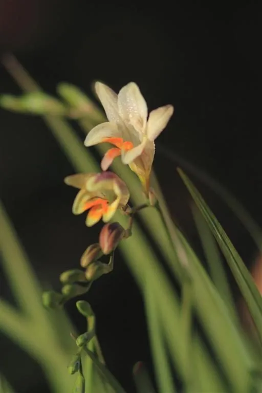

花卉与草本 · 植物界
小苍兰 Freesia refracta

鸢尾科多年生草本，春季开漏斗状小花，花色明丽、香气清甜，是重要的切花与盆栽花卉，原产南非。
- 分类
- 门被子植物门纲木兰纲目天门冬目科鸢尾科属小苍兰属
- 栖息环境
- 凉爽湿润的庭园与温室，喜阳光充足
- 地理分布
- 原产南非；中国各地温室与庭院栽培
- 保护级别
- 暂无评估；中国未列入国家重点保护野生植物名录
物种志
小苍兰为鸢尾科小苍兰属多年生球根草本，株高 30–60 厘米，地下具圆锥形球茎。叶片线形，基生，排成两列。花葶细长，穗状花序稍弯曲，着花 5–10 朵，花冠漏斗状，有黄、白、粉、紫、红等色，香气清甜，花期 2–5 月；果实为蒴果。
小苍兰原产南非，中国各地温室与庭院栽培，喜凉爽湿润、阳光充足的环境，不耐寒，适宜疏松肥沃、排水良好的沙质土壤。它花色明丽、香气清甜，是重要的切花与盆栽花卉，常用于花束、花篮与室内摆放；栽培以分球繁殖为主，球茎需经过低温处理才能正常开花。切花采收宜在花序下部花朵开放时进行，采后避免与水果同放，以免乙烯加速衰老。
形态与习性
- 株高30–60 厘米，花葶细长
- 花期2–5 月，花漏斗状、香气清甜
- 果期花后结蒴果
- 光照喜阳光充足
- 水分喜湿润，忌积水
- 土壤疏松肥沃、排水良好的沙质土
- 主要用途切花、盆栽与花束
趣味知识
- 小苍兰的香气清甜，是香水和芳香产品中常见的香调。
- 它原产南非，球茎需经过低温处理才能正常开花。
- 小苍兰的花序向一侧弯曲，花朵排列成整齐的一排。
- 切花应避免与苹果、香蕉等水果同放，以免乙烯加速凋谢。